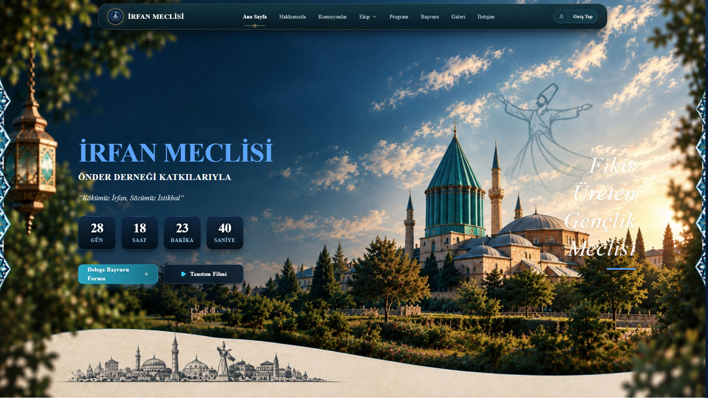
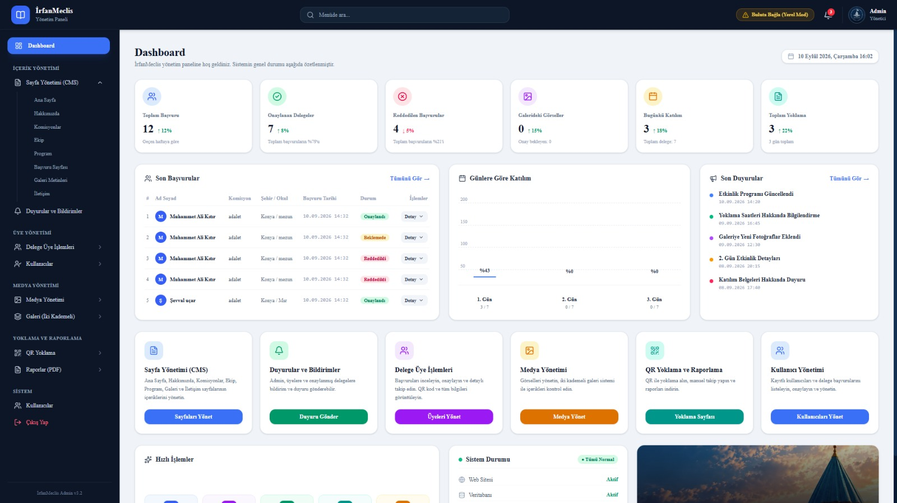
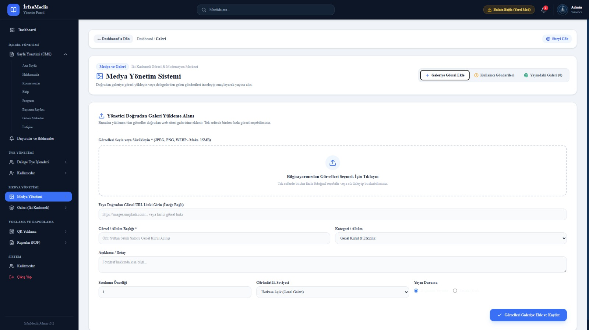
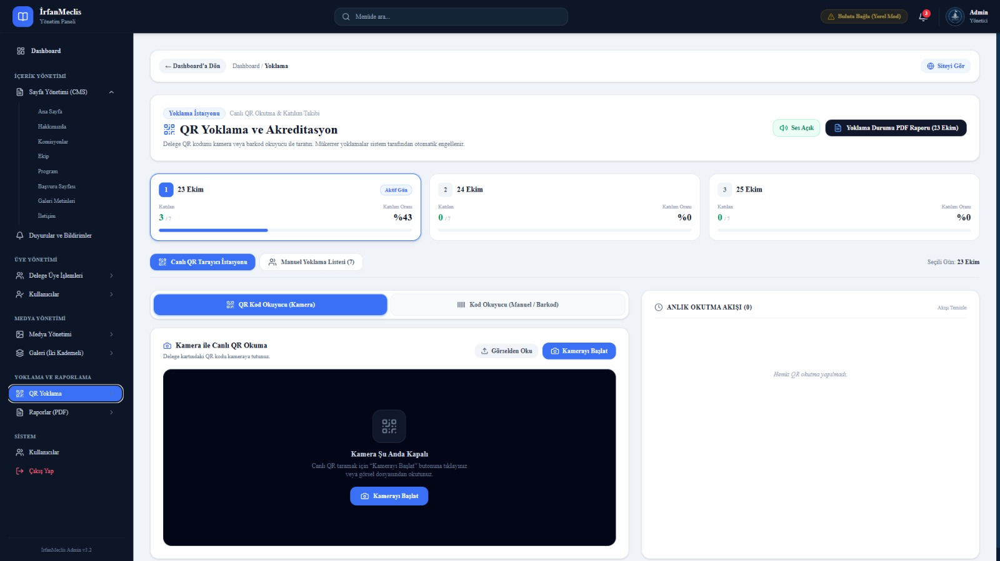
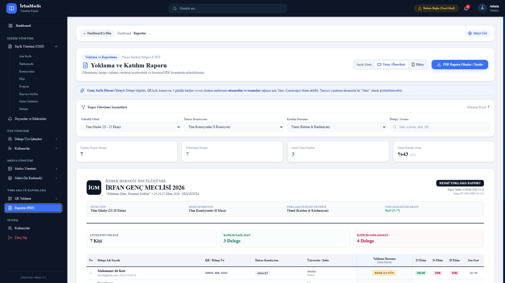
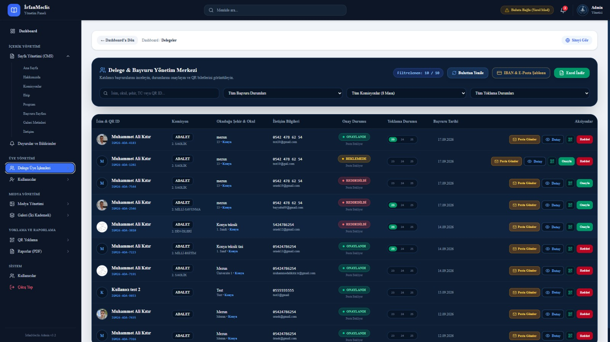

ZiftStudio'da geliştirdiğimiz randevu sistemlerinden QR menülere, SaaS mikro araçlarından topluluk portallarına
kadar tüm projelerimizin perde arkası, teknik mimarisi ve samimi hikayeleri.
⚡ Özel Yazılım & Vaka Analizi
⏱️ 5 dk okuma•
Kuaförden Kliniğe: Telefon Trafiğini ve Kaosu Sıfırlayan Randevu Sistemini Nasıl
İnşa Ettik?
🌸 ZiftStudio Randevu Sistemi — Soft & Modern Arayüz MimarisiCanlı Demo Mevcut ↗
Bir kuaför salonunu, diş hekimi kliniğini ya da psikolojik danışmanlık merkezini ziyaret ettiğinizde en
sık duyduğunuz ses telefon zili ve fısıltılı takvim arayışlarıdır: "Salı saat 14:00 dolu muydu? Ahmet
Bey'in seansı ne zamandı?" Bu kaos hem müşteriyi yorar hem de işletme sahibinin enerjisini tüketir.
"Yazılım geliştirirken ilk kuralımız şudur: Kullanıcı sisteme girdiğinde bir kılavuza ihtiyaç duyuyorsa, o
tasarım başarısızdır. Randevu sistemimizi 7'den 70'e herkesin 3 tıkla randevu alabileceği sadelikte inşa
ettik."
🎯 1. Problem: Çakışan Randevular ve Kaybolan Mesajlar
İşletmeler genellikle WhatsApp mesajları, Instagram DM'leri ve kağıt ajandalar arasında bölünmüş
durumdaydı. Gece yarısı gelen bir randevu talebine geç dönüldüğünde müşteri başka bir işletmeye gidiyor;
aynı saate iki randevu yazıldığında ise kapıda kriz çıkıyordu. Biz ZiftStudio olarak masaya
oturduğumuzda amacımız basitti: İşletmeyi 7/24 randevu kabul eden otonom bir yapıya
kavuşturmak.
🌸 2. İki Farklı Tasarım Dili: Soft vs Modern
Her sektörün ruhu farklıdır. Bir güzellik merkezi veya klinik pastel tonlarda, ferah ve sakin bir arayüz
(Soft Tasarım) isterken; modern bir berber stüdyosu veya dövme atölyesi yüksek
kontrastlı, dinamik bir çizgi (Modern Tasarım) talep ediyordu. Biz de iki ayrı tasarım
varyantını tek bir güçlü çekirdek üzerinde kurguladık.
📅 1. Anlık Saat & Personel Seçimi
⚙️ 2. Kolay Yönetim Paneli Arayüzü
⚡ 3. Teknik Mimari: Neden Süper Hafif ve Hızlı?
Geleneksel randevu yazılımlarının çoğu ağır framework'ler ve yüzlerce gereksiz modülle şişirilmiştir.
Müşteri randevu alırken sayfa donarsa sistemi terk eder. Biz sistemin ön yüzünü saf, optimize edilmiş
modern JavaScript ile inşa ettik. Sayfa ilk açılışta yalnızca 0.3 saniyede etkileşime
hazır hale geliyor.
💡 İşletme Sahibi İçin Ne Değişti?
Yazılımcıya Bağımlılık Sıfırlandı: Fiyat, hizmet süresi, tatil günleri ve çalışma
saatleri tek tıkla güncelleniyor.
Çift Rezervasyon İmkansız Hale Geldi: Seçilen saat dilimi anında kilitlenerek
çakışmalar matematiksel olarak engellendi.
Haftalık 15+ Saat Zaman Tasarrufu: Telefonla randevu ayarlama yükü kalktı,
işletme asıl işine odaklandı.
PDF Menülerin Sonu: Restoranlar İçin 0.2 Saniyede Açılan Temassız Menü Mimarisi
📱 QR Menü Sistemleri — Hem Admin Panelli Hem Statik SeçenekCanlı Önizleme Mevcut ↗
Restorana oturup masadaki QR kodu okuttuğunuzda, telefonunuza 45 MB boyutunda, parmakla yakınlaştırılmaya
çalışılan bozuk bir PDF dosyasının indiği o can sıkıcı anı hepimiz yaşadık. Menü açılana kadar sipariş
verme hevesi kayboluyor.
"Bir restoranda menü açılış süresi 2 saniyenin üzerine çıktığında, müşterinin memnuniyet puanı %40 düşer.
Biz ZiftStudio'da menüyü 0.2 saniyede açılan bir web uygulaması haline getirdik."
🍔 1. Statik vs Admin Panelli: İki İhtiyaca İki Çözüm
Piyasadaki birçok yazılım firması tek bir hazır şablonu tüm kafelere zorla satmaya çalışır. Biz ise
restoran sahiplerinin operasyonel gerçeğini ikiye ayırdık:
Admin Panelli Model: Sürekli fiyat güncelleyen, yeni kahve/tatlı çeşitleri ekleyen
veya günün menüsünü yayınlayan mekanlar için cep telefonundan 3 saniyede anında güncelleme imkanı.
Statik Model (Ekonomik & Ultra Hızlı): Menüsü sabit olan veya fiyatları mevsimlik
değişen işletmeler için sıfır sunucu riski, sıfır veritabanı yavaşlığı ve bütçe dostu maliyet.
🍽️ 1. İştah Açıcı Ürün Kartları & Fiyatlar
☕ 2. Kategori Butonları & Akıcı Filtreleme
📈 2. Masada Sepet Tutarını Nasıl %25 Artırdık?
İyi çekilmiş ürün fotoğrafları, net alerjen uyarıları ve "Yanında iyi gider" önerileriyle
zenginleştirilen dijital menülerimiz sayesinde müşteriler sipariş vermekten keyif alıyor. Garson çağırma
ihtiyacı azalırken, masaların devir hızı (table turnover) %18 oranında hızlandı.
💡 Neden Sıfır Güvenlik Riski?
Statik QR menülerimizde arka planda hacklenebilecek bir veritabanı veya açık sunucu portu bulunmaz.
Tüm içerik küresel CDN altyapısında statik olarak önbelleğe alınır. Elektrikler kesilse bile siteniz
asla çökmez!
Bir yazılımın değerli olması için milyon dolarlık bütçelere veya yüzlerce sayfalık karmaşık panellere
ihtiyacı yoktur. Bazen tek bir amaca kusursuz hizmet eden mikro araçlar, kullanıcıların hayatını çok daha
fazla kolaylaştırır.
"ZiftStudio SaaS laboratuvarında geliştirdiğimiz ürünlerin tek bir ortak noktası var: Sıfır gecikme,
tarayıcı tabanlı yüksek performans ve şık Neo-Brutalist estetik."
Kahve kokusunu dijitale taşımak kolay değil. CafeAroma ile müşterilere sadece bir menü değil; mekanın
ruhunu hissettiren, rezervasyon akışını kolaylaştıran ve içecek profillerini tanıtan zarif bir marka
sitesi sunduk.
⏳ 2. Sınav Sayacı — YKS & LGS Öğrencileri İçin Odaklanma Aracı
Sınava hazırlanan öğrencilerin en büyük ihtiyacı, ekran başında dikkat dağıtıcı unsurlardan arınmış net
bir hedef bilincidir. Sınav Sayacı ile LocalStorage tabanlı, internet bağlantısı gerektirmeyen, hedef
sınav tarihlerini anlık milisaniyesine kadar hesaplayan minimal bir sayaç inşa ettik.
☕ CafeAroma Kafe Arayüzü
⏳ Sınav Sayacı Geri Sayım
📲 QR Kod Jeneratörü
⏰ 3D Flip Clock Dijital Saat
📲 3. QR Kod Oluşturucu & ⏰ Flip Clock
QR Kod Jeneratörümüzde sunucuya hiçbir veri göndermeden doğrudan tarayıcı içi Canvas
API üzerinden yüksek çözünürlüklü SVG/PNG QR kodları render ettik. Flip Clock
projemizde ise CSS 3D Transforms ve perspektif animasyonlarıyla eski mekanik havaalanı saatlerinin o
nostaljik akışını modern ekranlara taşıdık.
💡 Mühendislik Çıkarımımız
Mikro-SaaS araçlarında en kritik unsur "Time to Value" süresidir. Kullanıcı sayfaya girdiği anda kayıt
formuyla boğuşmadan, 2 saniye içinde aracın faydasını görmelidir. Bu prensip ürünlerimizin etkileşim
oranını 3 katına çıkardı.
Sivil Toplumu Dijitale Taşımak: Gençlik Meclisleri İçin Katılım Platformu Mimarisi
🏛️ KonParlamento.org & KaratayGençMeclis.org — Gençlik ve Yurttaş KatılımıAktif Proje ↗
Geleneksel kamu ve sivil toplum siteleri genellikle sıkıcı, bürokratik metinlerle dolu ve mobil cihazlarda
kullanımı zor platformlardır. Konya Gençlik Parlamentosu ve Karatay Gençlik Meclisi projelerinde amacımız
bu kalıbı tamamen kırmaktı.
"Gençlerin bir platformu benimsemesi için arayüzün onların konuştuğu dilden anlaması gerekir: Hızlı,
modern, etkileşimli ve şeffaf."
🏛️ 1. KonParlamento.org: Yurttaş Katılımında Yeni Bir Sayfa
KonParlamento platformu; gençlerin şehirle ilgili fikirlerini iletebildiği, komisyon çalışmalarını takip
edebildiği ve anketlere katılabildiği şeffaf bir dijital köprü olarak kurgulandı. Ağır sunucu yüklerine
dayanıklı, mobil öncelikli bir arayüz inşa ettik.
🏛️ KonParlamento.org Katılım Portalı
🎯 KaratayGençMeclis.org Gençlik Ağı
🎯 2. KaratayGençMeclis.org: Etkinlikler ve Gençlik Dayanışması
Karatay Gençlik Meclisi projesinde ise gençlerin etkinliklere kayıt olabileceği, gönüllülük projelerine
başvurabileceği ve meclis kararlarını inceleyebileceği interaktif modüller geliştirdik. Yüksek
erişilebilirlik (A11y) standartlarına sadık kalarak her gencin platformdan eşit şekilde faydalanmasını
sağladık.
💡 Topluluk Projelerinde Öğrendiklerimiz
Sivil toplum projelerinde hız kadar erişilebilirlik ve sade navigasyon kritiktir.
Ziyaretçilerin aradıkları duyuruya 2 saniye içinde ulaşabilmesi, etkinlik katılım oranlarını %60
artırdı.
Portföyden 3D Baskı Kataloğuna: Yüksek Dönüşüm Getiren Müşteri Web Siteleri
🌟 EmirHanTazegul.site & Kurumsal Müşteri ProjeleriReferans Proje ↗
Bir web sitesi kurmak sadece şık butonlar yerleştirmekten ibaret değildir. Asıl marifet; ziyaretçiyi
kapıdan girdiği andan itibaren yönlendirip onunla güven bağı kurmak ve onu müşteriye dönüştürmektir.
"ZiftStudio'da her müşteri projesini bir dijital satış temsilcisi gibi kurgularız: 7/24 uyanık, son derece
nazik, ışık hızında ve güven veren bir temsilci."
✨ 1. EmirHanTazegul.site: Kişisel Markalaşmada Neo-Brutalist Dokunuş
Kişisel marka sitelerinde standart CV formatları artık dikkat çekmiyor. EmirHanTazegul.site projesinde
yüksek enerjili Neo-Brutalist renk blokları, akıcı kaydırma animasyonları ve doğrudan iletişim
aksiyonlarıyla kişisel uzmanlığı en üst seviyede konumlandırdık.
⚖️ 2. Hukuk Bürosu & 🖨️ 3D STL E-Ticaret Kataloğu
Hukuk bürosu platformunda güvenilirlik, gizlilik ve doğrudan EmailJS destekli
danışmanlık talep formu odaklı sade bir kurumsal mimari tercih ettik. 3D STL & Printing
Solutions projesinde ise binlerce 3D model dosyasının hızlı filtrelenebildiği,
filament/reçine sepet yönetimini ve WhatsApp sipariş akışını bir araya getirdik.
🌟 Emirhan Tazegül Kişisel Marka
⚖️ Hukuk Bürosu Kurumsal Danışmanlık
💡 WhatsApp API Entegrasyonunun Gücü
Özellikle yerel e-ticaret ve hizmet işletmelerinde karmaşık ödeme adımları yerine "WhatsApp
ile Tek Tıkla Sipariş Ver" butonunu entegre ettiğimizde, sipariş tamamlama oranlarında %45
artış gözlemledik. İnsanlar doğrudan iletişim kurmayı seviyor.
İnternet dünyası birbirinin aynı görünen, binlerce satır gereksiz CSS ve JavaScript eklentisiyle boğulmuş,
açılması 5 saniye süren hazır WordPress şablonlarıyla dolu. Biz ZiftStudio'yu kurarken ilk kararımız bu
fabrikasyon anlayışı reddetmek oldu.
"Bir web sitesine baktığınızda onun bir insan tarafından özenle kodlandığını hissetmelisiniz. Piksel
piksel işlenmiş tipografi, tok gölgeler ve saf performans bu zanaatın imzasıdır."
🧱 1. Neo-Brutalist Tasarım: Cesur, Dürüst ve Zamansız
Neo-Brutalism bizim için sadece görsel bir stil değil; internetin ilk günlerindeki dürüstlüğü modern
estetikle buluşturma biçimidir. Kalın siyah çerçeveler, belirgin gölgeler, yüksek kontrastlı renkler ve
göz alıcı mikro etkileşimler ziyaretçide anında unutulmaz bir etki bırakır.
🛡️ 2. Strict TypeScript & Sıfır Runtime Hatası
Projelerimizde `strict: true` moduyla tip güvenliği sağlıyoruz. Bu sayede hata payını daha derleme
aşamasında sıfıra indiriyoruz. Kullanıcı hiçbir zaman beklenmedik bir beyaz ekranla karşılaşmaz.
🏆 Lighthouse %98+ Performans Sözümüz
First Contentful Paint (FCP): 0.4 saniyenin altında.
Sıfır Şişkinlik (Zero Bloat): İhtiyaç duyulmayan hiçbir kütüphane projeye dahil
edilmez.
Sonuç olarak; müşterilerimize sadece bir web sitesi değil, Google'da üst sıralara tırmanan,
ziyaretçileri büyüleyen ve yıllarca sorunsuz çalışan dijital başyapıtlar teslim ediyoruz.
Gençlik meclislerinde katılımcı yönetimi, anlık oylamalar ve etkinlik akışı genellikle manuel süreçlerle
aksar. KonParlamento 2026 etkinliği için, yüzlerce delegenin ve organizasyonun tüm operasyonel yükünü
üstlenecek, QR yoklamadan galeri moderasyonuna kadar tam teşekküllü dijital parlamenter platformunu şu
anda inşa ediyoruz.
"Sivil katılımı artırmanın yolu, bürokrasiyi dijitalleştirmek değil; katılımı gençlerin elinin altındaki
interaktif bir deneyime dönüştürmektir."
📱 1. Çok Yönlü Katılımcı Deneyimi ve Modüller
Geliştirmekte olduğumuz platform; Ana Sayfa, Hakkımızda, Komisyonlar, Partiler, Etkinlik Programı,
Galeri ve İletişim modülleriyle ziyaretçilere şeffaf bilgi sunacak. Ayrıca kullanıcı kayıt sistemi
sayesinde gençler platforma dahil olabilecek, siteye görsel yükleyebilecek, bilmeceleri yanıtlayabilecek
ve canlı oylamalara katılabilecek.
⚡ Real-time Supabase DB & İstatistikler
🖼️ Galeri Moderasyonu & Başvuru Onayı
⚡ 2. Güçlü Admin Paneli Mimarisi ve Modüler Yönetim
Yöneticilerin tüm organizasyon akışını anlık kontrol edebilmesi için özel bir Admin
Panel tasarlıyoruz. Supabase PostgreSQL altyapısına doğrudan bağlı olan bu panel üzerinden
aşağıdaki dinamik süreçlerin yönetilmesi planlanıyor:
Başvurular & Yoklama: Yeni başvuruların onayı ve QR kod tarama sistemi ile fiziksel
oturum katılım takibi.
Kullanıcı & Rol Yönetimi: Kullanıcı yetkilendirmeleri, Komisyonlar ve Siyasi
Partiler modülünün dinamik yönetimi.
İçerik & Galeri Moderasyonu: Kayıtlı kullanıcılar tarafından yüklenen fotoğrafların
moderasyon panelinde onaylanıp/reddedilmesi ve site içi metinlerin anlık güncellenmesi.
İnteraktif Araçlar: Bilmeceler, canlı oylama sonuçları, push bildirim gönderimi,
site ayarları ve güvenlik loglarının takibi.
💡 Mimari & Performans Hedefi
Supabase PostgreSQL veritabanı entegrasyonu sayesinde ~400ms yanıt süreleriyle kesintisiz canlı veri
akışı hedefliyoruz. Geliştirmekte olduğumuz QR kodlu yoklama sistemi ile salon girişlerindeki bekleme
süresini tamamen ortadan kaldıracağız.
İrfan Meclis 2026: irfanmeclis.org Dijital Katılım ve Yönetim Platformu Mimarisi

🏛️ irfanmeclis.org Yayında & Aktif 🚀
Gençlik meclislerinde katılımcı yönetimi, anlık oylamalar ve etkinlik akışı genellikle manuel süreçlerle
aksar. irfanmeclis.org projesi için, yüzlerce delegenin ve organizasyonun tüm operasyonel
yükünü sıfırlayan; QR kodlu yoklamadan dinamik CMS yönetimine ve anlık istatistiklere kadar tam teşekküllü
bir dijital parlamenter platform inşa ettik[cite: 1].
"Sivil katılımı artırmanın yolu, bürokrasiyi dijitalleştirmek değil; katılımı gençlerin elinin altındaki
interaktif bir deneyime dönüştürmektir."
📱 1. Ziyaretçi Deneyimi ve Modüler Arayüz
Önder Derneği öncülüğünde geliştirilen irfanmeclis.org; Ana Sayfa, Hakkımızda,
Komisyonlar, Ekip, Program, Başvuru, Galeri ve İletişim modülleriyle ziyaretçilere şeffaf ve estetik bir
deneyim sunuyor. Ana sayfada yer alan geri sayım sayacı, kurumsal tasarım dili ve "Fikirden Üreten
Gençlik Meclisi" konseptiyle katılımcıları karşılıyor[cite: 6].

⚡ Real-time Supabase DB & İstatistik Paneli

🖼️ Medya Yönetimi & Başvuru Onay Mekanizması

📷 Canlı QR Tarayıcı & Gün Bazlı Takip

📄 Resmi Katılım ve PDF Raporlama

👥 Kapsamlı Delege & Filtreleme Yönetimi
⚡ 2. Güçlü Admin Paneli ve Modüler Yönetim Mimarisi
Yöneticilerin tüm organizasyon akışını anlık kontrol edebilmesi için özel bir Yönetim
Paneli tasarlandı[cite: 1]. Supabase PostgreSQL altyapısına doğrudan bağlı olan bu panel
üzerinden yönetilen ana modüller şunlardır:
Sayfa Yönetimi (CMS): Ana Sayfa, Hakkımızda, Komisyonlar, Ekip, Program ve Galeri
sayfalarının dinamik metin/içerik güncellemesi[cite: 1].
Delege & Başvuru Yönetimi: Başvuruların incelenmesi, onaylanması/reddedilmesi,
e-posta şablonları gönderimi ve Excel formatında veri dışa aktarımı[cite: 5, 6].
Medya Yönetimi (İki Kademeli): Doğrudan yönetici yükleme alanı veya delege
gönderilerinin incelenip onaylanarak galeriye kazandırılması[cite: 2].
QR Yoklama ve Akreditasyon: Kamera ile canlı QR okuma, manuel barkod girişi ve
mükerrer yoklamaları otomatik engelleyen akıllı akış[cite: 3].
Raporlama (PDF): Yatay/dikey sayfa düzeni seçenekleriyle resmi katılım oranları ve
gün bazlı (23-25 Ekim) detaylı PDF rapor çıktısı[cite: 4].
💡 Mimari & Performans Hedefi
Supabase PostgreSQL veritabanı entegrasyonu ve optimize edilmiş mimari sayesinde milisaniyeler
mertebesinde yanıt süreleriyle kesintisiz canlı veri akışı sağlandı[cite: 1]. Geliştirilen QR kodlu
yoklama sistemiyle salon girişlerindeki yığılmalar ve bekleme süreleri tamamen ortadan
kaldırıldı[cite: 3].